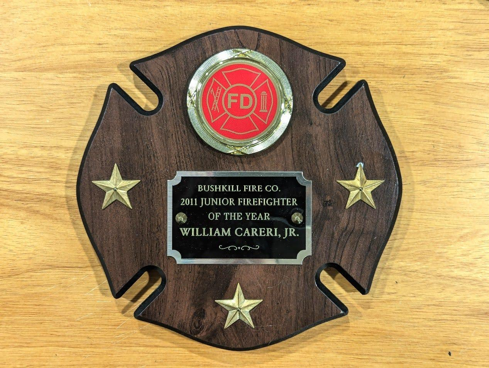

Leadership
I’ve been thinking a lot about leadership lately. “Leadership” is something most are taught as they grow up, through extracurriculars or real life experiences, but unless you enter into a leadership program or course of sorts, you’re not often exposed to leadership styles and theory.
I consider that “bridge” between rudimentary and intermediate leadership education to be Gallup’s StrengthsFinder. Here, you learn what leadership strengths you possess; a step up from rudimentary styles like democratic, autocratic, laissez-faire, etc…
It’s been eight years since I took my first StrengthsFinder assessment and received my top five strengths—futuristic, learner, input, competition, ideation. I recently took it again for the first time since then, and I received my newest top five strengths—relator, learner, context, intellection, developer. Three of my skills—learner, input, ideation—didn’t move much, if at all, out of my top five. The other two—futuristic and competition—are now at the bottom of the total 34 strengths.
I understand why; when I first took this assessment, I was in my second year of community college with a very clear goal for my future, willing to do anything for success. Now, I’ve reached a point in my career where I’m not complacent, but rather realistic on where I stand while still remaining optimistic. I have achieved more than I thought I would before I turned 30, and I’m enjoying it while taking on new challenges.
![A list of five strengths or talents, each with a title and a short description. The strengths are: 1. Relator, described as someone who enjoys close relationships and working with friends to achieve a goal; 2. Learner, someone with a strong desire to learn and improve, finding the process of learning exciting; 3. Context, someone who enjoys thinking about the past and understanding the present through historical research; 4. Intellection, characterized by intellectual activity, introspection, and appreciation for intellectual discussions; and 5. Developer, someone who recognizes and cultivates the potential in others, finding satisfaction in witnessing their progress. Each strength is presented with a white background and a light grey border, with the title in bold and the description in regular text. The image is clean and simple, focusing on the text descriptions of each strength.](../assets/images/blog/leadership-skills.jpg)
This brings me to a contemplative question, though. It has felt very natural for me, and I have seen this in others, as well, to change leadership styles not only as you progress in your career, but also for the room you’re in. The most influential piece of leadership advice I’ve received is knowing when to step up and step back. Lately, I’ve seen leaders require change around them to fit their style, because that’s what works for them. Is this the right approach, rather than conforming yourself?
I don’t have a complete answer to this. For now, I think effective leadership is about striking a balance between adapting to the needs of others and staying true to your authentic self. It’s in this balance that we find the ability to inspire, influence, and grow alongside those we lead.
Longing
Speaking of change over time, and maybe I’m just a sucker for nostalgia, but I was talking with a friend recently about how we’re at a point in our lives when we’re looking back at past eras of ourselves. When you’re a teenager, you can look back, but there weren’t several-year spans where you can identify yourself as a different person. My friend asked if I ever thought about being a volunteer firefighter again, which is something I did for six years, up until I finished community college. While the answer was, “no,” there was a part of me that wished the answer was, “yes.”
I know throughout my life, I am going to end meaningful eras, because as you grow, other things must give. Whether you’re quitting a stable job to start your own company or in my case, leaving the fire department to go away to college, there will always need to be something that gives.
When this happens, it’s easy to start forgetting, like I do occasionally, at what was. But every so often, there’s a longing for it. I know I will not be a volunteer firefighter again, at least not for a very long time, but that doesn’t mean I have to forget the lessons learned, the second family it gave me, and the character it built. My dad remains involved as a volunteer firefighter and rescue diver, so stories will never be further than a phone call away, but I also keep the helmet clip on my keychain as a more daily reminder.
